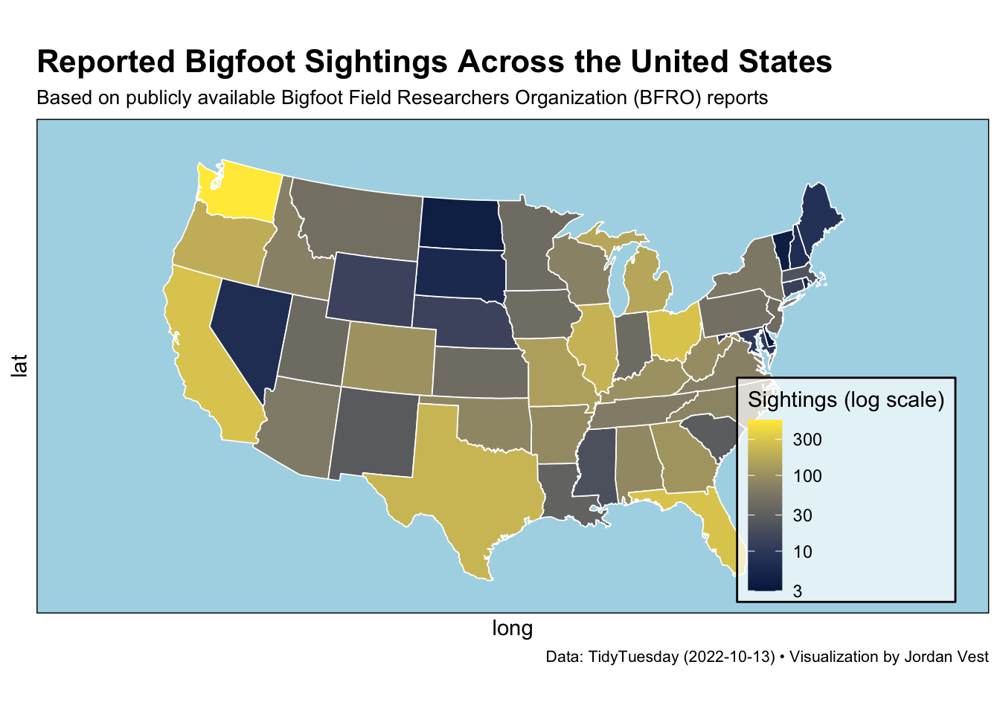

library(tidytuesdayR)
library(ggplot2)
library(tidyverse)
library(maps)
library(mapdata)
library(mapproj)
library(here)Wk7_HWa
A great map of Bigfoot sightings across the USA
Assignment
make a map using Quarto with one of the following datasets from past Tidy Tuesdays. Make sure that scripts and output are saved appropriately.
2 points - best Quarto practices
2 points - best file structure practices
2 points - best scripting practices
4 points - best map practices
Load Libraries
Read in data
The data comes from Bigfoot Field Researchers Organization (BFRO) by way of Data.World.
bigfoot_raw <- read_csv("https://raw.githubusercontent.com/rfordatascience/tidytuesday/main/data/2022/2022-09-13/bigfoot.csv")
# Clean the data: remove rows missing key info like state or coordinates
bigfoot_clean <- bigfoot_raw %>%
filter(!is.na(state), !is.na(latitude), !is.na(longitude))
# Save cleaned data to my Data folder
write_csv(bigfoot_clean, here("Week_07", "Data", "bigfoot_clean.csv"))
# Re-load from local file for reproducibility
bigfoot <- read_csv(here("Week_07", "Data", "bigfoot_clean.csv"))Wrangle Data
bigfoot_state <- bigfoot %>%
mutate(state = tolower(state)) %>% # make lowercase to match map_data
group_by(state) %>%
summarise(n_sightings = n())Get map data
usa <- map_data("state")Join map with sightings
bigfoot_map <- usa %>%
left_join(bigfoot_state, by = c("region" = "state"))Make a map
ggplot() +
geom_polygon(data = bigfoot_map,
aes(x = long,
y = lat,
group = group,
fill = n_sightings),
color = "white",
linewidth = 0.3) +
# Projection and limits for continental U.S.
coord_map("albers", lat0 = 30, lat1 = 45) +
# Log scale because sightings vary a lot by state
scale_fill_viridis_c(
option = "cividis",
trans = "log10",
name = "Sightings (log scale)"
) +
# Add some flair and polish
labs(
title = "Reported Bigfoot Sightings Across the United States",
subtitle = "Based on publicly available Bigfoot Field Researchers Organization (BFRO) reports",
caption = "Data: TidyTuesday (2022-10-13) • Visualization by Jordan Vest"
) +
theme_minimal() +
theme(
panel.background = element_rect(fill = "lightblue"),
plot.title = element_text(face = "bold", size = 16),
plot.subtitle = element_text(size = 10),
plot.caption = element_text(size = 8, hjust = 1),
legend.position = c(0.85, 0.25),
legend.background = element_rect(fill = alpha("white", 0.7)),
axis.text = element_blank(),
axis.ticks = element_blank(),
panel.grid = element_blank()
)
Save it
ggsave(here("Week_07","Output","Bigfoots_HW7a.pdf"))Saving 7 x 5 in imageWarning in grid.Call.graphics(C_text, as.graphicsAnnot(x$label), x$x, x$y, :
for 'Data: TidyTuesday (2022-10-13) • Visualization by Jordan Vest' in
'mbcsToSbcs': . substituted for • (U+2022)